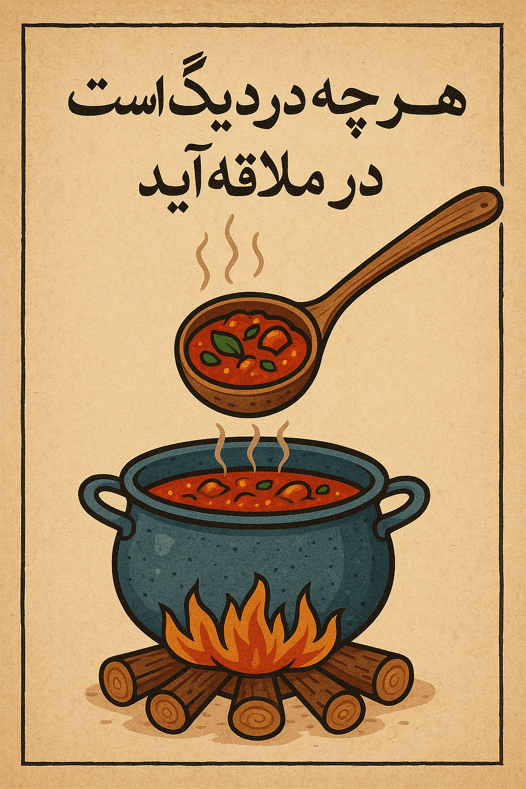

Afghan Proverbs Collection

هر چی در دیگ است،در ملاقه برآید
Whatever is in the pot, will come out in the ladle.
Detail
آب را گل آلود میسازد که ماهی بگیرد .
"He muddies the water to catch fish."
Detail
سگ که چاق شود، صاحب خوده نمیشناسد
"when a dog becmes fat,it doesn't recognize its owner."
Detail
دیگ که دوتا جوش کند، شوربا بی مزه میشه
"when a pot boils twice, the soup becomes tasteless."
Detail
مار گزیده از ریسمان سیاه و سفید میترسد
"A snake-bitten person is afraid of black and white rope."
Detail
باد آورده را باد می برد
"The wind has brought it,the wind will take it away."
Detail